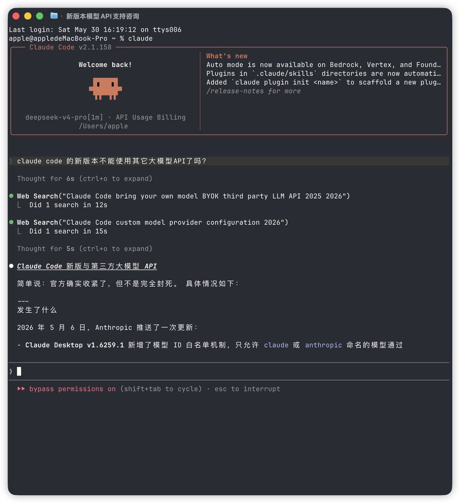

奶昔🥤
@realNyarime
现在的国模给我的感觉就是，卷TUI、卷Coding、依附Claude Code，最后成了他人的嫁衣
每次CC或Codex一更新，就立刻会出现兼容问题，给用户的体验极差…… 虽然有CC Switch克服困难，但是太NTR了
反而对于大部分办公人士来说，发展GUI能大大降低使用门槛，应该把精力放在Harness，降低门槛付费率会更好

偶像派作手
@oxpsats
Claude code 不能用国产大模型API吗？一直可以呢。 https://t.co/Mbwk19zZJ9